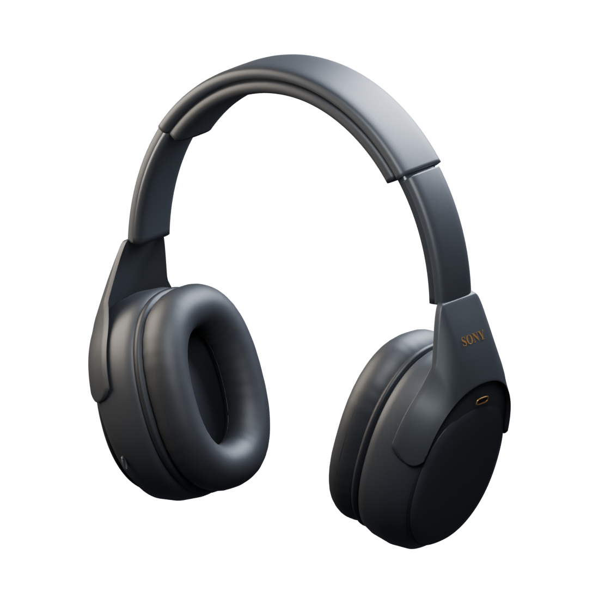

Small footprint. Everyday reach.
Battery, noise modes, EQ, and scenes from the menu bar. Close the window; keep the controls.
A little more focus. A little less friction.
Your Sony headphone controls, right where you work.
Free, always. macOS 15+ · Apple silicon & Intel

01 — MAKE IT YOURS
Let the world in. Tune it out. Find the curve that makes your favorite album feel new again. All without reaching for your phone.
Noise canceling for deep work. Ambient sound for everything around you. Move between them in a click.
Five bands + Clear Bass on XM3 / XM4.
02 — RIGHT AT HOME
One native app, from the menu bar to the smallest keyboard shortcut. Keep your controls close and your phone in your pocket.
Meet your shortcuts ↗Battery, noise modes, EQ, and scenes from the menu bar. Close the window; keep the controls.
Automatic reconnection, optional launch at login, and scenes triggered by an app, a schedule, or a connection.
Read-back verification where supported. Activity shows confirmed, adjusted, and failed changes.
03 — FIND YOUR FIT
Focused on the WH-1000XM3 and XM4. Controls adapt to what your headphones report, with experimental support for newer generations.
Upstream hardware-tested V1 controls. This fork still needs a hardware pass.
Shared V1 protocol; capability-driven controls. Hardware validation pending.
V2 implementation included. Not verified on hardware in this project.
Feature availability varies by model and firmware. XM3 does not have Speak-to-Chat. No firmware updates or extra macOS audio codecs. See the full compatibility notes ↗
OPEN CODE. NO STRINGS.
No account. No activation. No analytics. Your scenes and preferences stay on your Mac. Update checks are optional and off by default.
Explore the source ↗04 — YOUR QUIET STARTS HERE
macOS 15 or newer. A paired set of headphones.
That’s all you need to get started.
Community builds are ad-hoc signed, not notarized.
Building locally is the recommended starting point.
Download the archive for your Mac, unzip it, and move OpenXM.app to Applications.
Connect your headphones in macOS Bluetooth settings, open OpenXM, and allow Bluetooth access.
Choose your noise mode, shape your EQ, and save a scene for next time.
For supported everyday controls, you can use your Mac directly. Keep the Sony app for firmware updates and features that this project does not support. No Sony account is required by OpenXM.
No. It is an interactive illustration using sample data. The downloadable native Mac app communicates with headphones over Bluetooth.
Community releases use an ad-hoc signature, without paid Apple Developer ID signing or notarization. Build from source with the provided script if macOS blocks the download. You do not need to disable system security settings.
OpenXM is the new name for this project. Quit SoundConnect, install OpenXM.app, and remove the old app copy. Your saved scenes and preferences carry over. Re-enable Open at Login in OpenXM if you used it before.
OpenXM is an independent MIT-licensed fork of Open Sound Connect by rolottr. Protocol references include SonyBridge and Sony Device Center. Credits and upstream license notices are preserved in the repository.